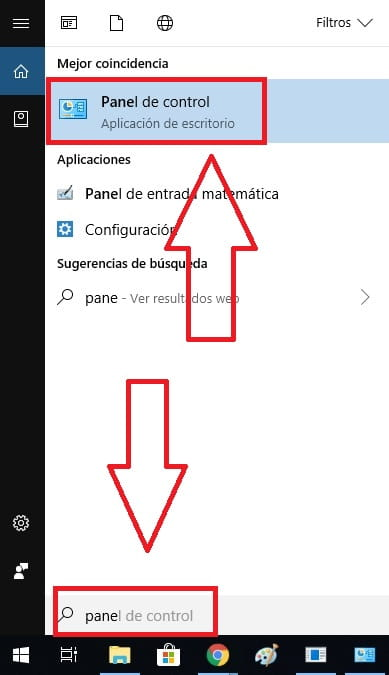
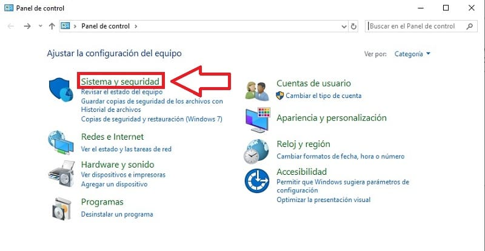
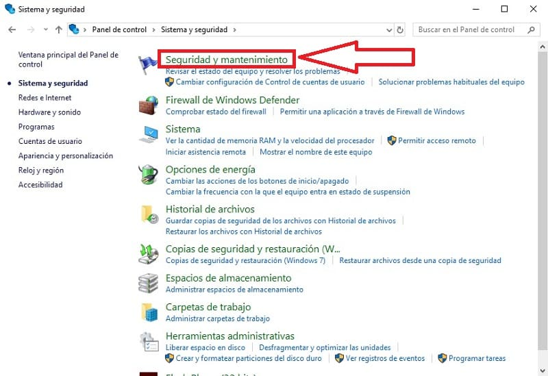
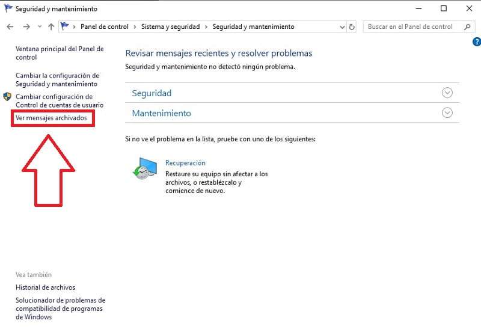
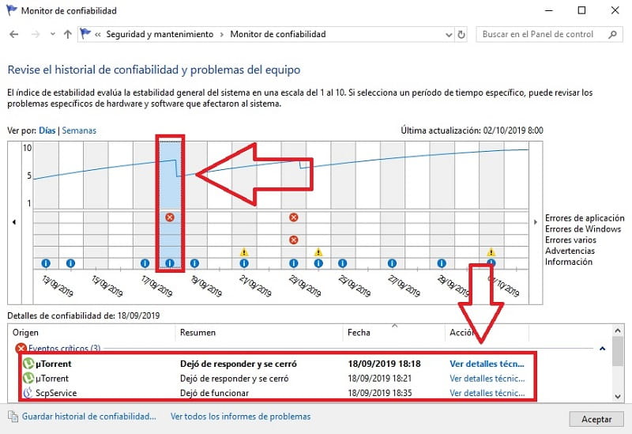

Historial de Errores de Windows 10
Es una herramienta que nos permite saber que programa falló en un determinado momento en Windows 10. Esto en tremendamente útil para conocer cuál es el programa que vuelve al sistema inestable o que aplicación nos provocó un error en concreto.

Empezando este Tutorial
- Ver el informe de errores en Windows 10 es un proceso muy sencillo, lo primero que deberemos de hacer es entrar en «Inicio», luego vamos a «Cortana» y escribimos «Panel de Control», una vez localizado entramos dentro. 
- Una vez dentro del «Panel de Control» deberemos de entrar en «Sistema y Seguridad», tal y como en la foto. 
- Ya queda menos para ver el historial de confiabilidad, para ello, deberemos de entrar en «Seguridad y Mantenimiento». 
- Para abrir el monitor de confiabilidad en Windows 10 deberemos de ir al apartado de la izquierda justo donde dice «Ver Mensajes Archivados», entramos dentro. 
Ver Registro De Errores En Windows 10
- Para ver el informe de errores en Windows 10 deberemos de buscar el historial de fallos según los días, para ello deberemos de fijarnos en las X en rojo. Una vez localizadas con solo acceder a ellas podremos ver el historial de errores justo en la parte inferior. 
- Y de esta forma tan sencilla podremos acceder al historial de errores en Windows 10 fácil y rápido, de esta manera sabremos en que determinado momento falló nuestro sistema operativo y cuál fue el programa causante de dicho error. Para cualquier tipo de duda siempre puedes dejarme un comentario, prometo contestarte. No olvides que tienes todos los botones a tu disposición para compartir este contenido, 🙏 eso me ayuda muchísimo ¡Gracias!.
×